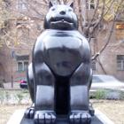

ЕРЕВАНСКИЙ ДНЕВНИК БАКИНСКОГО ЖУРНАЛИСТА
Пограничник глядя мне прямо в глаза, спрашивает: Вы уверены, что хотите пересечь границу Армении?
Отель «Олимпия» располагался на вершине ущелья и прямо под нами протекала река Раздан.

Рассказы о том, что Ереван рушится буквально на глазах, не имеют под собой почвы. Диаспора им
помогает, что ли?.

Армяне за всю неделю ни разу ничего плохого в адрес Азербайджана, азербайджанского народа
и азербайджанских
властей не сказали.
Смогу ли я достойно представить перед этими камерами свой народ?
Мы покинем этот город, не зная, удастся ли когда ни будь вернуться сюда снова.
О ПОЗИТИВНОЙ РОЛИ ВЗЯТКИ
Приглашение посетить Ереван и принять участие в шестидневной рабочей встрече НПО и граждан Южного Кавказа, было для меня неожиданностью. С председателем Кавказского Центра Миротворческих Инициатив Георгием Ваняном, у меня была чисто профессиональная переписка, то есть виртуальное знакомство. К реальному знакомству, да еще в такое скорое время, я готов не был. Посему, над поступившим мне предложением я размышлял долго. Кроме того, руководствуясь мудростью о том, что «одна голова хорошо, а две лучше», я поинтересовался мнением своих коллег, друзей, членов семьи. Итогом этого мониторинга общественного мнения, стало мое решение принять приглашение. «Почему бы и нет? На то мы и журналисты чтобы совершать поездки. Даже в Армению», подумал я. Сказано-сделано. И уже 5-го июля в вагоне поезда Баку-Тбилиси, началось мое хотя и не долгое, но нудное путешествие сначала до столицы Грузии, а оттуда на машине в Ереван. К счастью, в вагонах наших поездов установили кондиционеры, которые хоть как-то спасали от духоты. Но, как оказалось впоследствии, я рано радовался и поверил в то, что моя поездка пройдет без приключений.
Правда беда пришла, как говаривал гайдаровский Мальчиш-Кибальчиш, откуда не ждали. Разбудил нас утром проводник, постукивая в двери купе. Начиналась проверка и паспортный контроль. Служащие азербайджанской таможенной службы и пограничники хлынули в вагоны. Одни требовали показать содержимое багажа, другие предъявить паспорта. Однако меня ожидал настоящий сюрприз. Вместо того чтобы мучить нас, задавать глупые вопросы и «шмонать» сумки, наши доблестные пограничники и таможенники быстренько завершили свою работу и спустя короткое время мы тронулись в путь. «Вот это да! Умеем ведь, когда хотим! Не зря нас в Совет Европы приняли», теснились в моей голове горделивые мысли о казавшейся мне чудесным сном картине. Да-да, именно сном, так и хотелось ущипнуть себя, чтобы поверить, что это явь.
Но мое блаженство длилось не долго. Аккурат до Гардабани. Там наш поезд вновь остановили, на сей раз грузинские таможенники и пограничники. Вот тогда и началось то, что я ожидал увидеть на азербайджанской границе. Как оказалось, «революция роз» никак не повлияла на уровень воспитания и вежливость проверявших нас грузин. Нам быстренько объяснили кто здесь хозяин, напрочь забыв о хваленном кавказском гостеприимстве. Грузинские пограничники и таможенники по-хамски требовали у пассажиров открывать сумки, кричали на нас, заставляли сходить с поезда, показывать свой багаж и вообще обращались с людьми не по-людски. При этом, их хамство носило интернациональный характер и распространялось в одинаковой степени и на грузинских пассажиров. Заметив мой удивленный взгляд, проводник нашего вагона, азербайджанец средних лет проговорил: «Это после Саакашвили так стало. Сейчас как минимум застрянем здесь на три часа. Раньше они взятку получали и быстренько всех отпускали. А теперь взяток не берут, зато мучают «челночников»».
После услышанного, я, впервые в жизни, подумал о позитивной роли взятки, позволяющей избежать излишней траты времени и позитивно влияющей на гостеприимство и общий культурный уровень пограничников и таможенников. В душе моей теплилась надежда, что три часа мы здесь не простоим. Но пророчество проводника сбылось, и мы проторчали на гардабанской станции даже больше указанного проводником времени. Но все в этом мире имеет свое начало и свой конец. Закончилась и наша проверка, крики и вопль грузинских челночников и пограничников перестали сотрясать воздух и наш поезд тронулся. От перенесенных потрясений лучшим лекарством был бодрящий сон, который был прерван по прибытию в Тбилиси.
Я ЛЮБЛЮ ТЕБЯ, РОДИНА!
В столице Грузии нас встречали грузинские и армянские участники рабочей встречи. Здесь же были и осетины Тимур Цховребов (Союз экс-комбатантов, газета «21-ый Век») и Сергей Тадеев (Агентство по мотивации общества и социальному развитию). До Еревана мы должны были ехать на удобном микроавтобусе марки «Форд», путешествие в коем благоприятно сказалось на аппетите пассажиров.
Голод – не договор о прекращении огня и бесконечно продолжаться не может. Поэтому, остановка в Марнеули, где мы решили перекусить, была весьма кстати. Чревоугодию мы предавались в ресторане местного азербайджанца, который потчевал нас вкусными блюдами грузинской кухни.
За столом сидели осетины, грузины, армяне и азербайджанцы. Меня удивило то что, между грузинскими азербайджанцами и армянами никаких проблем не существует. Это было заметно по мирной беседе местных азербайджанцев с армянской делегацией. Вообще, наши азербайджанцы в Марнеули живут круто. По крайней мере, анаша, которая росла в огороде хозяина ресторана свидетельствовала о том, что альтернативный и весьма прибыльный источник дохода у нашего ресторатора, в прямом смысле этого слова, валяется под ногами. Правда, сам хозяин (имени называть не стану) клятвенно заверял, что «анаша сама по себе растет, и он ею не балуется». Как бы то ни было, но после вкусного обеда, поехали дальше.
Но ехали мы недолго. Оказалось, что до Садахло, приграничного района Грузии с Арменией, рукой подать. Узнав о том, что до границы оставались считанные минуты, я попросил водителя остановиться по дороге, чтобы купить сигарет. В маленьком магазинчике пожилая женщина смотрела «Лидер ТВ». «И здесь азербайджанцы!», - изумленно констатировал я. Заговорил с теткой на родном нам языке и, расплатившись нашей валютой, манатами, купил у нее пачку сигарет. Встреча с соотечественницей, живущей всего в нескольких минутах от границы с Арменией, навела меня на меланхолические мысли. И не знаю, сколько бы я еще грустил, если бы вдруг до меня не дошло что сигареты, которые стоят у нас 1 новый манат, в Садахло стоят целых 2! «Я люблю тебя, Родина!», пронеслось у меня в голове после этих математических подсчетов. На душе стало как-то веселей, и даже обычно ненавистная российская поп-музыка показалась мне весьма благозвучной музыкой. Под ее звуки мы и доехали до границы Грузии с Арменией.
Протягиваю паспорт грузинскому пограничнику. В глазах его читается изумление. Пограничник удивленно поднимает брови, и, глядя мне прямо в глаза, каким то равнодушно-страдальческим голосом спрашивает: «Вы уверены, что хотите пересечь границу Армении?» Не подумав ни минуты, я выпалил: «Да. Более, чем уверен». «Как знаете», - прошептал пограничник полушепотом и громко шлепнул штампом по моему паспорту.
От кого произошли люди? Получив свой паспорт от грузинского пограничника, я сделал первый шаг в направлении Армении. Топая по мосту, я издали уже заметил челночников, туристов, таможенников и пограничников, которыми кишмя кишела армянская граница, На их фоне выделялись, двое, опрятно одетых, представителей спецслужб, о которых мне говорил руководитель проекта Георгий Ванян. Один из них особо выделялся своим гигантским телосложением. Мы, то есть я, грузинский журналист Ираклий Чихладзе, тбилисский художник Михаил Иашвили и южноосетинская братия вплотную приблизились к армянскому шлагбауму. Ребята из спецслужб сделали шаг навстречу и сухо поздоровавшись, потребовали паспорт. Я протянул паспорт напарнику «гиганта» и, прислонившись к трубе, стал ждать. На постсоветском пространстве границы везде одинаковые. Суета, возня, недовольные и удивленные лица не понимающих, куда они попали европейцев и весьма невежливые пограничники. Через пару минут «ГБ» - шники подошли ко мне и предположили переступить черту и войти в Армению. А взамен я предложил познакомиться с неразговорчивым «гигантом» и протянул ему руку: «Алекпер». «А я Фил», - сказал он. «Так вас действительно зовут?»«А какая разница? Для тебя я буду Филом», - улыбаясь парировал «ГБ»-шник и посторонился, пропуская меня.
Тогда я и сделал шаг навстречу судьбе. Согласен, «шаг навстречу судьбе» - это донельзя избитая фраза. Но в данном контексте это выражение подходило как никогда. Ибо я ступал на землю народа, с которым мы воюем почти 20 лет и который оккупировал почти 20 процентов земель Азербайджана. Ощущения были, какими-то жидкими и аморфными.
Почему-то сразу появилась потребность говорить. Говорить долго и много, но рядом никого из нашей команды не оказалось. Все куда то разбежались. Меня окружали только армяне. Много армян. Под их пристальным взором я сел в наш «Форд» и стал ждать, когда мне вернут паспорт. А веселый Георгий Ванян, продолжал подшучивать: «Добро пожаловать в древнюю Армению. Сейчас наши древние «ГБ» - шники принесут тебе твой паспорт». Действительно прошло не более пяти минут как паспорт принесли. С волнением начинаю листать его. И, правда, никакого штампа свидетельствующего о том, что я пересек границу Армении не было. Но ведь и ежу ясно, что если человек покинул пределы Грузии из Садахло, то он может войти только в Армению. Хотя, если армянские власти решили штампов не ставить, это их право. «ГБ» - шники должны были сопровождать наш «Форд» до самого Еревана, на своем «Мерседесе». Они мне сразу объяснили, чтобы я без разрешения никуда не отлучался (даже по нужде), ничего не фотографировал и постоянно находился в поле их зрения.«Это для твоей же безопасности. Мы не можем гарантировать, что в Армении не найдется идиота, желающего ударить, а то и вовсе убить азербайджанца», - объяснял мне Фил.
Наш «Форд» тронулся. Ехали мы по пейзажным районам, проезжали через маленькие, большие селения. В каком то поселке городского типа, рядом с которым протекала буйная река, мы остановились, и Георгий Ванян купил огромное количество персиков и яблок.«Это вкусные, древние армянские фрукты. Они особенные, как весь армянский народ», сказал он. «Люди произошли от обезьян. Обезьян - первая армянская фамилия», пронеслась, после упоминания о древности всего армянского, в памяти фраза из выступления команды КВН «Новые армяне».
Что до персиков, то действительно оказались вкусными. Мы продолжили наше путешествие. Первое, что привлекло мое внимание, это безупречно ровные и чистые автотрассы Армении (так продолжалось до самого Еревана). Никаких ухабов, ям и открытых канализационных люков. «Как это они умудрились провести такой ровный асфальт?», - подумал я, но спрашивать не стал. Во-первых, потому, что был риск услышать эпос о древнем армянском асфальте, Во-вторых, пришлось бы рассказывать, что у нас, в Азербайджане, свеженанесенный асфальт, трещит по швам буквально на следующий день.
Асфальт асфальтом, но вот мы уже и в Спитаке... Я прошу водителя сбавить скорость (кстати, наш водитель это отдельная история. По-моему он приходится родственником Шумахеру). Для меня, человека пережившего августовское землетрясение в Турции (находился рядом с эпицентром), а после возвращения в Азербайджан, октябрьское землетрясение в Баку, было интересно посмотреть, как восстановили Спитак армяне. Оказалось, что восстановили. Построили новые жилые дома, административные здания, магазины, разбили парки и скверы. Спрашиваю у Георгия:«Много времени и средств потребовалось на все это?» «И времени и денег. Но раньше город был больше конечно, сейчас он гораздо меньше стал», - ответил мне Георгий.
Темнело. На горизонте видны огни какого-то города. Спрашиваю у Георгия:«Это Ереван?» «Нет, Ты лучше поешь этих древних армянских яблок и наберись терпения. Скоро будем в Ереване», - отвечает он. Водитель заменил русскую попсу, каким-то армянским эстрадным сборником. Под громкие звуки армяно-азербайджано-турецких мотивов, наше путешествие близилось к концу.
В населенный пункт, чьи огни я спутал с ереванскими мы заезжать не стали, а свернули направо. Это была ровная автотрасса, напоминающая чем-то сумгаитскую дорогу. Георгий поворачивается к нам и объявляет: «Господа! Через пару минут мы въедем в древнюю столицу древней Армении, город Ереван». Въехали. Сначала показались автомастерские, потом пошла вереница жилых домов, супермаркетов, стал появляться городской транспорт, люди на остановках ночного Еревана, бары, рестораны, отели. Мы уже находились в центре города. Водитель свернул направо, и наш «Форд» остановился перед отелем «Олимпия». Отель располагался на вершине ущелья и прямо под нами протекала река Раздан. В этом отеле мне предстояло гостить 6 дней.
МЕРЫ ПРЕДОСТОРОЖНОСТИ
В «ресепшыне» отеля «Олимпия» нас встретила миловидная, хрупкая девица, которая, хлопая ресницами пропела: «Добро пожаловать в Ереван. Вы будете проживать в номере 309», и протянула мне ключи. Обменившись с ней любезностями, я потянул за собой свой рюкзак и побрел к номеру. За мной по пятам следовал Фил. Подойдя к двери, я повернул ключ в скважине и только собирался войти в комнату, как Фил остановил меня. Он первый вошел в номер, проверил ванную комнату, посмотрел на балкон, заглянул под кровати. «Ты бы еще в унитаз заглянул», подумал я. Но мои мысли не обладали телепатическим воздействием и Фил, позволил мне войти, предупредив: «Через полчаса - ужин. Увидимся в ресторане». Честно говоря, меня, после утомительного пути, меньше всего волновали убийцы под кроватью. Мне дико хотелось кушать. А, поев, как мне казалось, я готов был проспать суток двадцать напролет. Но до этого не дошло, и после контрастного душа я немного пришел в себя. Посмотрел на часы, оказалось, что полчаса уже прошло. Выхожу в коридор и вижу Георгия Ваняна, который, покуривая, ждал в холле нашу группу. Мы с ним прошли в ресторан, который поразил меня обилием новых лиц за столом. Помимо приехавших со мной грузин и осетин, за столом сидели неизвестные мне люди, с которыми Георгий Ванян принялся нас знакомить. Оказалось, что здесь присутствуют: Степан Григорян (Аналитический Центр по глобализации и региональному сотрудничеству), Нане Багратуни, (журналист, Кавказский Центр Миротворческих Инициатив), Луиза Погосян, (Кавказский Центр Миротворческих Инициатив) из Армении, Альберт Восканян (Центр Гражданских инициатив), Джулия Арустамян (НПО «Гармония») и Давид Карабекян (социолог) из нашего родного Нагорного Карабаха. Последних Георгий Ванян «ласково» называл сепаратистами и добавил что помимо сепаратистов из Южной Осетии и Карабаха, остались еще Абхазы, которые вот-вот должны приземлиться в Ереване. А летели они из Сочи.
CПОР О ДОЛМЕ
Вдруг, словно по мановению волшебной палочки, откуда-то появилась канистра грузинского вина, которая значительно облегчила процесс знакомства. Луиза Погосян (кстати, одна из организаторов проекта) произвела на первый взгляд впечатление неразговорчивой, но весьма милой девушки, которая внимательно изучала присутствующих глазами, перманентно даря нам свою изумительную улыбку (в последующие дни выяснилось, что она просто не хотела зря тратить энергию, ибо на встречах и обсуждениях Луиза говорила больше всех).
Нане Багратуни так же разговорчивостью не страдала. Она напоминала о своем присутствии лишь короткими репликами. Зато со Степаном Григоряном, который сидел рядом, мы разговорились сразу. Он приятно удивил меня, сказав, что читает мои статьи и хотел, чтобы я выступил с докладом в ереванском офисе Фонда Фридриха Эберта (Германия), на тему «Евро-интеграция в решении карабахского конфликта». Я пообещал ему подготовить доклад, и мы договорились, что через 4 дня я его зачитаю перед СМИ Армении.
Что касается членов карабахской делегации, (Карабах проходил в наших документах как «непризнанное сообщество»), то среди них выделялся бывший бакинец, ныне проживающий в Ханкенди и возглавляющий «Центр Гражданских Инициатив» Альберт Восканян. Он сидел напротив меня и в основном говорил по-азербайджански. С ностальгией он рассказывал про свою молодость, учебу и друзей в столице Азербайджана. Кстати, как я заметил, обычно, когда встречаются армяне и азербайджанцы, они начинают посылать проклятия в адрес тех, кто начал эту заваруху и сделал нас врагами. И ни кому в голову не приходит (а может и приходит) сказать, что конфликт то начали мы сами и третьи силы тут не причем. Говоря словами Сеймура Байджана - «Это наша война, это наш родной конфликт и русские ни в чем не виноваты». С Сеймуром я частично соглашаюсь, но полностью исключать роль русских в этом конфликте тоже не собираюсь. Но это так – лирическое отступление.
Дело было вечером, делать было нечего, и я решил поближе познакомиться с Джулией Арустамян. Оказалось что и она родом из Азербайджана, родилась и выросла в Мингечауре. Немного знает азербайджанский язык. После начала известных событий, в конце 80-х она вынужденно переселилась в Нагорный Карабах. Мужа потеряла на войне. Сегодня живет в Шуше и участвует в проектах миротворческих сил. Объясняет это желанием «скорейшего разрешения нашего родного конфликта». Желание, безусловно, похвальное. Одно плохо - у каждого из нас свое видение решения и свой рецепт. Но об этом позже.
А ужин, тем временем, близился к концу. Вдруг резко поднимается из-за стола Георгий Ванян и объявляет что «должен ехать в аэропорт и встречать абхазских сепаратистов». Кто-то из гостей громко возразил, что «сепаратистов становится все больше и это не честно». Данная реплика была встречена взрывом общего смеха. Смеялись и карабахские армяне, но я не знал, что происходит у них на душе. Хотя мне действительно было интересно узнать, обижаются ли они на такого рода высказывания, или нет? Георгий удалился и почему-то сразу после его ухода разгорелся спор вокруг того, блюдом какой кухни является долма. Спорили до хрипоты. Я предложил признать долму азербайджанской, но констатировать, что лучше всех ее готовят армяне, лишь бы этот бессмысленный спор прекратился. И в это время Степан Григорян наклонился ко мне и прошептал на ухо фразу, которая поразила глубиной анализа: «Карабахский конфликт мы обязательно решим, и научимся жить в мире. Но спор о долме, будет продолжаться до самого судного дня». Эх, слышали бы эти слова содокладчики Минской группы ОБСЕ! Уверен, что тогда бы на повестке дня появились бы новые предложения по урегулированию карабахского конфликта, с учетом сохранения национальной принадлежности долмы.
ГОСПОДИ!
КАК ЖЕ ПОХОЖИ НАШИ НАРОДЫ!
Время шло, знакомства крепли. И вот уже во всю ширь и ввысь встал вопрос, ответ на который искал еще Чернышевский – кто виноват? В поисках ответа на этот вопрос собравшиеся начали посылать проклятья в адрес России, которая на таком маленьком клочке земли как Кавказ, рассеяла такое огромное количество конфликтов, превратив наш регион в одну большую раковую опухоль, которая метастазирует не по минутам, а секундам. Остановились мы только тогда, когда Георгий Ванян с группой абхазских сепаратистов вошел в ресторан. Все начали знакомиться с абхазской делегацией. Это были мой коллега Даур Начкебиа, (писатель-публицист), Анаит Гогорян (журналист) и Асида Адлейба (Союз женщин-предпринимателей Абхазии). Даур мне понравился сразу. Это он, первым делом предложил прекратить обвинять во всех бедах Россию и не ругать русский народ. Все неохотно согласились.
Но вот девушки абхазки, меньше всего походили на людей собирающихся обсуждать конфликты в рамках миротворческих проектов. Обе они, особенно Асида Адлейба, смахивала на манекенщиц или туристок. Мне показалось, что они все еще не понимают где находятся и, главное, почему находятся (в последующие дни мои опасения подтвердились и на обсуждениях девушки сидели со скучающим выражением лица и вздрагивали только тогда когда кто-то произносил имя их родины - Абхазия). Надо отдать должное Дауру, который спасал абхазскую делегацию и все время на обсуждениях и встречах проявлял активность.
Новые знакомства - штука приятная. Но и спать хотелось безбожно. Наконец, к трем часам ночи, единогласно было принято решение идти спать. Завтра нас ожидал тяжелый день, загруженный график работы и долгие часы обсуждений. Все начали потихоньку расходится. С трудом, волоча ноги, я добрел до номера. Лег в постель, и, следуя доброй старой традиции, взял в руки пульт (перед сном обязательно должен посмотреть телевизор, хотя бы пару минут). В Армении оказывается около двенадцати (а может и больше) каналов. Это меня поразило. А если честно я вообще позавидовал им. Набрел на один канал, где показывали клипы. «Господи! Как же похожи наши народы!», воскликнул я. Ответа не последовало. Вместо этого последовали звуки музыки – это накрашенные, толстые, безобразные бабы и брюхастые мужики пели на фоне водопадов, пальм, кустов и скал. Они бегали по лесу, прятались за деревьями, держались за ручки и крутились в хороводе, катались на лужайке, врезались в автомобилях со слезами на глазах в стены, к ним на помощь спешили грузовики и «Скорая помощь», но уже было поздно и он или она давно уже улетали в мир иной, чем вызывали кадры слез возлюбленного(ой) над могилой возлюбленной(ого). Те же самые сцены расставания, слезы, цветы и прочая мура, которая меня уже достала в Баку, преследовала меня и в Ереване. Итог первого дня: наши песни и клипы - братья близнецы. Интересно, что меня ожидало завтра?
CЛЕДОВ ГОЛОДА И РАЗРУХИ В EРЕВАНЕ ЗАМЕЧЕНО НЕ БЫЛО
Мой сон был прерван звонком представителей охраны, которые сообщали о том, что пора подниматься на завтрак. Быстро приняв ванну и не менее спешно позавтракав, я готов был к поездке в ереванский офис Фонда Фридриха Эберта, чтобы подготовить доклад который я собирался зачитывать перед СМИ Армении 10-го июля (об этом мы со Степаном Григоряном договаривались накануне). Мы сели в машину Степана и поехали (телохранитель сидел впереди). По дороге я получил возможность внимательно рассмотреть Ереван. По сравнению с Баку, столица Армении это типичный, советский, провинциальный город. Но мне все равно понравилось увиденное. Что именно? Во-первых, Ереван показался мне городом, в котором все создано для комфорта людей. Мое внимание привлекло большое количество скверов, парков и деревьев вдоль дорог; отсутствие пробок, широкие проспекты и улицы. Во-вторых, почти все такси в городе, это автомобили «Газ-31» на которых стоят счетчики и оплата производится строго по таксе, после чего клиенту выдается чек. Машину можно вызвать, позвонив в таксомоторный парк и через пару минут такси приедет на указанный адрес. В-третьих, придающие городу розовый оттенок дома, построенные из туфа, вполне сочетались с аккуратно расположенными вдоль дорог, рекламными билбордами, мегабордми и лайтбоксами (кстати, мне показалось, что уличной рекламы в Ереване, больше чем самих людей, то бишь потребителей).
Наблюдал я за всем этим, и думал про себя: «Черт побери, но даже при таком количестве положительных моментов, Ереван остается столицей страны, которая, мягко говоря, перессорилась со всеми своими соседями и в результате сама оказалась в проигрыше. Что же было бы, не будь этих конфликтов?» Но, история не терпит сослагательного наклонения. И поэтому при первом же взгляде на Ереван в кие пронеслась знаменитая брежневская фраза: «Широко шагает Азербайджан!». Да, мы однозначно являемся лидером на Кавказе. И об этом говорит сравнение уровня развития Баку и Еревана. В столице Армении нет такого количества иномарок как в Баку, нет большого числа новостроек (их вообще я насчитал 6-7 во всем городе). Даже банкоматов, которые в Баку стоят почти под каждым балконом, в Ереване я насчитал несколько (оказывается пенсии, и зарплаты в Армении не выдаются через банкоматы). Однако, все это не дает нам права обманывать себя. Ибо первые впечатления от столицы Армении таковы: рассказы о том, что Ереван гниет, рушится и крошится буквально на глазах не имеют под собой почвы. Никаких следов голода и разрухи с моей стороны замечено не было. «Диаспора им помогает, что ли?», - подумал я, вспоминая о том, что никаких природных богатств у Армении вроде бы нет. Сидевший рядом Степан Григорян будто бы прочел мои мысли. «Алекпер джан, вот ваши журналисты и НПО-шники приезжают к нам, ходят, смотрят, подтверждают, мол «да, армяне с голоду не помирают». Но по возвращению в Баку обливают грязью наш город и делают прогнозы о том, что армяне в скором времени в массовом порядке протянут ноги. Хотя понять их можно, ведь если они станут писать, что в Ереване люди не попрошайничают, и с голоду не умирают, у них наверняка проблемы начнутся», рассуждает Степан. Я возражаю: «Господин Григорян, эти журналисты и НПО-шники занимаются самодеятельностью и просто пишут то, что им позволяет совесть. Но никто у них не просит врать и никто на них не давит. И я вам это докажу».
СПОР О KАРАБАХЕ
Просидев в офисе Фонда Фридриха Эберта за компьютером полтора часа и подготовив свой доклад, мы вернулись в отель. Здесь меня ожидал сюрприз. В отеле находился один из участников рабочей встречи с армянской стороны, знаменитый писатель-постмодернист Ваграм Мартиросян, чей роман «Оползни» переведен на азербайджанский и печатается в Баку газетой «Сэнэт». Я давно хотел познакомиться с ним, вот судьба свела нас. Ваграм - харизматичный, высокорослый мужчина средних лет, который щеголяет в шортах и которому, как оказалось, не только шорты, но и море по колено. Мне был интересно послушать человека с нестандартным для армянина мышлением и который говорил весьма непопулярные вещи про Зория Балаяна, дашнаков и вообще про Армению.
В 12-00 началась работа. Знакомство, обсуждение плана и графика рабочей встречи. Так же мы знакомились с новоприбывшими участниками. Это были Артак Зейналян (правозащитник), Вардан Арутюнян (Центр Права и Свободы), Нино Иашвили (НПО «Дети и окружение») и, конечно же, добродушный Гурам Одишариа, писатель из Грузии, которого все называли «дядей Гурамом». Первая часть первого дня работы конференции завершилась в 16-00, после чего мы пошли обедать и знакомиться поближе. За обедом дядя Гурам несколько раз назвал Баку столицей Кавказа, от чего я возгордился и многозначительно стал смотреть на карабахских участников. Они стоически молчали. Потом мы с дядей Гурамом дружно стали «крыть» союзы писателей и обсуждать проблемы литературы в наших странах.
После обеда мы вернулись в конференц-зал и продолжили обсуждение. От стоического молчания карабахских армян не осталось и следа. Первым заговорил Давид Карабекян, которому почему-то не понравилась формулировка «непризнанное сообщество», обозначавшая Нагорный Карабах в документах мероприятия. Он говорил много и долго, из всей его исторической тирады я понял, что он хочет добиться признания «НКР» не выходя из зала, не дожидаясь и, хотя бы, в наших документах. Только я собрался открыть рот, чтобы возразить, как Георгий Ванян и Луиза Погосян сделали это вместо меня: «Давид, дорогой, что ты хочешь? Чтобы мы написали «НКР»? Какая «НКР»? И что это решит?», - заговорили они. Не остался в стороне и ваш покорный слуга. «Давид, насколько мне известно, Армения сама еще не признала такого государства как «НКР». Это первое. Во-вторых, ты должен понять, что эта аббревиатура без кавычек, сделает невозможным участие азербайджанцев в этом проекте, ибо мы тоже «НКР» еще не признавали и вроде не собираемся», - озвучил я свои доводы…
Армянская делегация полностью поддержала меня, и Георгий заявил, что тему эту закрываем и непризнанные должны довольствоваться этой формулировкой. Мы составили график работы на завтрашний день и решили, что 8-го июля будем обсуждать темы «Становление демократии и разрешение конфликтов» и «НПО в непризнанных сообществах».
ЕРЕВАН – ГОРОД РОКА
После вкусного ужина, участники удобно устроились в своих креслах на терассе ресторана. Кто-то посасывал пиво, кто-то пил крепкий армянский кофе, некоторые просто курили и беседовали. Вдруг откуда ни возьмись, появились веселые девицы из Абхазии Анаид и Асида. Они сообщили нам весть о том, что в клубе «Stop» сегодня рок-концерт знаменитой группы «Гор и друзья».
Я был наслышан о ереванских рок-группах, но возможности послушать их, у меня не было. По-моему, такая возможность у меня уже появилась. Концерт, по словам девочек, должен был начинаться в 21-00. Поднимаюсь со своего кресла и подхожу к Филу: «Я еду на рок-концерт». «Исключено! Мы не получали разрешения. Культурные мероприятия для вас не предусмотрены». «Но я должен пойти на рок концерт». «Вы никуда не пойдете! На рок концерте пьяная, обкуренная молодежь. Что станет с вами, если эти люди узнают, что вы из Баку? Нет! Вы никуда не поедете!» Сидящие рядом два напарника Фила одобрительно кивали головами, подтверждая его слова. Но я действительно должен был пойти на рок концерт. Это стало делом принципа. Я подошел к Георгию. «Господин Ванян, я хочу на рок-концерт». Георгий удивленно смотрит на меня и вопрошает: «А кто тебе мешает, дорогой? Иди куда хочешь». «Охрана не пускает». «Чего?! Как это не пускает?!» Георгий, размахивая руками и бормоча, что то себе под нос на армянском, подходит к моим ангелам хранителям-телохранителям. Сначала они разговаривали мирно. Потом начали ругаться. Все это в перспективе обещало перейти в рукопашную.
Тем временем шел десятый час. То есть концерт уже начался. Мои коллеги Ираклий Чихладзе и Нане Багратуни, не хотели ехать без меня и стали вместе со мной ждать, чем же кончится эта «война». Георгий уже начал крыть кого-то матом и параллельно звонил кому-то по мобильному (потом выяснилось, что он говорил с высокопоставленным чиновником из спецслужб Армении). Часы показывали половину десятого. Георгий сообщил мне, что ему сейчас перезвонят и дадут разрешение. Потом он снова начал ругаться с телохранителями. Ему позвонили. Он долго говорил по телефону, ругался и кричал. Я не знал чем все это закончится и сильно переживал за этого доброго и эмоционального человека, которому было не по себе, от того, что его гость не может пойти на концерт. Когда часы уже показывали 22:00, поступил звонок, позволяющий Алекперу Алиеву, то есть мне пойти на концерт. Я сказал Георгию, что того времени, что он потратил для получения для меня разрешения посетить концерт, вполне могло бы хватить для того, чтобы, дабы не мелочиться, провести также и переговоры с властями Армении и Азербайджана по поводу решения карабахского конфликта. Но в любом случае, лучше поздно, чем никогда. Мы вызвали такси и вместе с Ираклием и Нане, поехали на концерт. Автомобиль телохранителей сопровождал нас.
Когда мы сошли перед клубом, Фил отвел меня в сторону и предупредил: «Прошу тебя, сиди спокойно и просто слушай концерт. Про Азербайджан и Баку ничего не говори. Предупреди своих друзей, чтоб и они не говорили. В клубе непредсказуемая молодежь, мы не можем дать тебе гарантию, что ничего не произойдет. Но мы все равно будем охранять тебя изнутри и снаружи».
Мы заходим в клуб. Дым столбом, а от музыки лопаются перепонки. Через пару минут мы с Ираклием, Нане, Джульеттой и туристками из Абхазии забыв обо всем на свете, наслаждаемся роком. Это было нечто! Если Баку это город джаза (что признают и сами армяне), то Ереван вполне можно назвать городом рока. А тем временем «пьяная и обкуренная» армянская молодежь, с опаской поглядывала в нашу сторону. Сначала я не понял что происходит. Но когда я повернулся назад и увидел, незнакомцев, которые стояли над моей головой, с пистолетами и рациями все стало ясно. Один из незнакомцев наклонился ко мне и прошептал: «Меня зовут Артур. Фила и его команды уже нет. Охранять тебя будем мы». Поздоровавшись со своим новым телохранителем, я устало отвернулся. А молодежь тем временем, пыталась понять, «какая же важная персона сидит за тем столом, что его охраняют «качки» с пистолетами? Небось, сын, какого-то министра или олигарха…».
А уже на следующий день я узнал от Георгия, что спецслужбы Армении заменили моих телохранителей, по той причине, что они не могут найти общий язык с Георгием, для которого очень важно, чтобы его азербайджанские гости шастали по рок-клубам Еревана.
АБАСЗАДЕ И ГУМБАТОВ
ВМЕСТО «ТАЛЫШСТАНА»
ПОЛУЧАТ ЖИРНЫЙ ШИШ
Утро, 8-го июля. После вчерашнего рок концерта, я долго не мог прийти в себя. То ли от впечатлений полученных на концерте, то ли от «лопнувших» перепонок, а может от того, что у меня так часто меняются телохранители. А тем временем, после завтрака началось обсуждение тем, вынесенных на повестку дня конференции... Первыми выступили абхазы и осетины. Честно говоря, я не ожидал подобной агрессии с их стороны. Они критиковали грузин и Грузию на чем свет стоит. Для меня это было удивительно – я был уверен, что больше всех на этих обсуждениях, будут грызться между собой карабахские армяне с азербайджанцами. Прислушавшись к выступлениям ораторов, я обнаружил, что абхазы и осетины, говоря о компромиссах и уступках, подразумевали признание их независимости. Слава Богу, у нас с карабахскими армянами таких проблем не было (они за всю неделю ни разу ничего плохого в адрес Азербайджана, азербайджанского народа и азербайджанских властей не сказали).
После обеда Луиза Погосян предложила участникам рассказать о проблемах существующих в наших государствах и непризнанных сообществах. Например, о том, как у нас обстоят дела со свободой слова, правами человека, демократией. Начну со своего выступления. В первую очередь я отметил, что в Азербайджане со свободой слова проблем нет. Однако, выражаясь словами Эльчина Шихлинского, я добавил, что «у противной стороны тоже есть свобода действий, и они в любой момент могут искалечить, а то и вовсе убить тех, кто воспользовался этой самой свободой слова. То есть, свобода у нас есть, просто она для всех».
Всем очень понравились слова Шихлинского, и высказанному главным редактором газеты «Айна-Зеркала» афоризму очень долго аплодировали. «А что касается оппозиции, то она просто ликвидирована. У нас в Азербайджане нет оппозиции. Да, в наличии имеются партии, лидеры, какие-то оппозиционные издания, но оппозиции все равно нет. А рейтинг Ильхама Алиева все растет и растет...», - закончил я.
ЭХ, СЮДА БЫ АКИФА НАГИ!
Вслед за мной слово взяла Луиза Погосян. О, это было поистине революционное выступление! Она охарактеризовала армянское общество больным. «Миф о геноциде, которым нас пичкают, сделал армянское общество закомплексованным и больным. Мы воспитываем своих детей в ненависти к туркам. В данном случае, турки для нас это Турция и Азербайджан. Нам говорят, что мы победили на войне, но в действительности весь наш регион в проигрыше, и в частности, мы сами. Никакого развития не наблюдается, ничего хорошего не происходит. Сколько может продолжаться, эта пропаганда ненависти? Мы не можем работать на перспективу, постоянно мысля ретроспективно», эти слова Луизы звучали набатом. Эффект был велик! «Эх, сюда бы ярого армянофоба Акифа Наги! Чтобы он сказал на эти слова?», - подумал я. А тем временем, слово было предоставлено Альберту Восканяну: «В Карабахе все песни про Отечество, и военные марши, начинаются со словами «турок враг» и заканчиваются лозунгами о «великой Армении». Я хочу помешать этому, объяснить людям, что, в конце концов, нам придется жить вместе с этими людьми», заявил он. После данного выступления, я с гордостью отметил, что ничего подобного у нас нет. По крайней мере, я еще не слышал ни одного марша или песни, где говорится об армянах и о том, что их нужно истреблять. Наступила очередь выступать Георгию Ваняну. Ему тоже было, что сказать по поводу пропаганды ненависти. Много лет назад, когда Георгий Ванян занимался политикой, он предложил властям Армении признать территориальную целостность Азербайджана, отойти в сторону и не вмешиваться в дела карабахских армян и властей Азербайджана. «Но мои призывы услышаны не были. Армения своим вмешательством усугубила ситуацию в зоне конфликта и сегодня у карабахских армян больше антагонизма с Ереваном, нежели с Баку», - резюмировал Георгий Ванян.
Кстати, хочу напомнить читателям, что именно он, в бытность свою директором средней школы в Армении, запретил в своей школе учебники по истории. Он мотивировал это тем, что «история, которая пишется в Армении, превращает будущее поколении в инвалидов и терроризирует молодежь, которая начинает искать под каждым кустом врага турка». Естественно, что в результате самодеятельности, которую он развернул в своей школе, он лишился работы. Но Георгий сдаваться не собирался. Он ходил по школам со своей группой миротворцев и спрашивал у детей, какие страны являются соседями Армении. Дети, по его словам, называли Францию, США, Россию. Тогда Георгий открывал карту и объяснял детям: «Вот видите, сверху Грузия, справа Азербайджан, снизу Иран, а слева Турция. Вот эти государства и есть наши соседи, с которыми мы жили, и будем жить в соседстве всегда. Сейчас существуют некоторые проблемы с некоторыми из них, но мы должны эти проблемы решать и научится жить в мире и согласии», - говорил он детишкам. Сколько после этих слов армянских детей задумалось и взглянуло на Азербайджан иными глазами – не знаю.
Но даже если всего один армянин, прослушавший рассказы Георгия Ваняна перестал видеть в азербайджанцах врагов – есть надежда на то, что будущие поколения наших народов смогут найти общий язык. И еще. Проделанную армянами работу и высказанные армянами речи я привожу специально для одного азербайджанского телеканала, который не пытается даже выслушать доводы прогрессивно мыслящих армян.
Что до дискуссии, то в ее ходе был поднят вопрос о губинских евреях, которые в этом году начали утверждать, что от армян досталось и им. Я заявил, что действительно в Губе в этом году появились евреи, утверждающие, что в массовой резне, которую устроили нам дашнаки, пострадал и их народ. На этом «еврейский вопрос» был исчерпан. Зато я напомнил участникам рабочей встречи, о так называемых «борцах за свободу талышского народа», которые два раза собирались в Ереване и проводили свои «симпозиумы». А официальный Ереван, дабы навредить соседу, всячески содействовал сепаратистам, которые даже у себя в южном регионе Азербайджана, популярностью не пользуются и являются изгоями. «Фахреддин Абасзаде и Аликрам Гумбатов вместо «Талышстана» получат жирный шиш», - сделал я не совсем дипломатичное заявление, но суть его от формы не менялась и я продолжил, вдохновленный тем, что мой пассаж не был встречен свистом и обструкцией.» Официальный Ереван должен немедленно прекратить оказывать «гостеприимство» талышским сепаратистам, и прочим маргинальным элементам. Я понимаю, что Армения является моно-государством и ей сложно понять, что в одном государстве могут проживать нацменьшинства. Но что станет с нашим государством, если каждая этническая группа, проживающая в ней, начнет провозглашать независимость?», - вопрошал я.
Как оказалось, у армянской стороны, так же были свои претензии к Азербайджану… Джульетта Арустамян из Карабаха, заявила, что «Азербайджанское правительство должно выплачивать компенсации армянам, которые оставили в Азербайджане свое имущество, когда спасали свою жизнь». Но я даже не стал комментировать это абсурдное требование. Тем более, что следом послышался вопрос об армянской церкви в Баку. Я сказал участникам, что с церковью все в порядке, и что его огородили красивым заборчиком, отреставрировали, никакой библиотеки мы там не открывали и никаких бильярдных там нет (многие в Армении все еще полагают, что в армянской церкви, азербайджанцы играют бильярд и распивают чай)... Самое интересное, что я сам так и не смог получить вразумительного ответа на вопрос о судьбе шушинской мечети и мне так же не смогли толком объяснить, почему горят оккупированные территории. По мнению некоторых это «матушка природа виновата», а были некоторые, которые просто не затрагивали эту тему»
РАЗВЕНЧАННЫЙ МИФ:
СЫН ЗОРИЯ БАЛАЯНА
В перерыве, за чашкой кофе, один мой ереванский друг, рассказал мне интересную историю из жизни «великого» Зория Балаяна, одного из инициаторов движения за отторжение Карабаха от Азербайджана, этого махрового националиста. Итак, год 1993-ый. На улицах Армении задерживают молодых (и немолодых) мужчин, и насильно сажают в автобусы, для дальнейшего отправления их в качестве пушечного мяса, в зону боевых действий... Сын Зория Балаяна в это время проходил, по какой то улице и привлек внимание военных, которые захотели задержать его. Но молодому человеку удалось убежать от них, и он скрылся в неподалеку находящейся редакции газеты «Азг». Из редакции он позвонил своему отцу (текст разговора приведен со слов сотрудника газеты «Азг»): «Папуля, меня хотят отправить на войну!» «Кто хочет? Кто смеет? Ты где?» «Я в редакции газеты «Азг». Помоги мне!» «Оставайся на месте, никуда не выходи. Сейчас я приеду!» И действительно приехал. Приехал и так «спас» своего сына, что его никто больше не пытался отправить на войну, до самого подписания соглашения о перемирии. «Вот такие дела! А у вас этого Зория демонизируют и наверняка думают, что патриотизм у него из ушей прет. Да все они сволочи, эти идеологи войны!», - резюмировал мой собеседник. Я спросил у него: «Вы разрешаете мне написать об этой истории в Баку. Разумеется, вашего имени в материале не будет». Он дал свое согласие.
О БАЧКЕ УНИТАЗА И ТЕЛЕВЫСТУПЛЕНИИ
Вообще я одного не могу понять - почему бачок унитаза в моем номере, до сих пор неисправен? Между прочим, я неоднократно просил, чтобы бачок мне починили. Пришли мастера, поковырялись в нем, но он все равно не работает. Одним словом, жуть. И официанты ресторана окончательно достали. Говоришь им одно, а они приносят совсем другое. Я уже неоднократно говорил Ваграму Мартиросяну, Георгию Ваняну и Джульетте Арустамян, что по прибытии в Баку, обязательно напишу про кошмарный сервис гостиничного ресторана. Армянские коллеги меня поддержали.
Не знаю, почему я начал эту часть дневника, изливая желчь? Может, не с той ноги встал сегодня? А может сегодня десятое число и я должен зачитать на пресс-конференции, которая состоится в Ереванском офисе Фонда Фридриха Эберта, свой доклад? Может быть… На этот раз, после завтрака, в Фонд Эберта мы поехали всем составом. Вся наша рабочая группа «3+3» удобно расположилась за круглым столом, перед камерами телеканалов и диктофонами газетчиков. Но, в центре внимания находился, конечно же, Ваш покорный слуга, который от волнения (волновался потому что должен был зачитывать текст с бумаги, а это меня всегда нервирует) покусывал ручку. И, во-вторых, я должен был впервые выступать перед общественностью Армении. Дело было ответственное. «Смогу ли я достойно представить перед этими камерами свой народ?» - подумал я.
Доклад «Уходящее время» наконец-таки был зачитан. На заданные вопросы кое-как ответил. А после пресс-конференции, корреспондент телевидения «Армения», красивая девушка (имени, к сожалению, не помню) попросила меня пройти в соседнюю комнату, для детального интервью. В комнате были установлены камеры. И я, расположившись в кресле, стал глядеть в объектив. Вопросы были разные: Как вам Армения, нуждаетесь ли вы в охране, как оцениваете действия Рамиля Сафарова. Я пытался на все вопросы отвечать предельно дипломатично, но в то же время оставаться искренним. Не знаю, получилось это у меня, или нет. Однако, после того как были выключены камеры и интервью закончилось, девушка пожала мне руку и сказала что первый раз пожимает руку азербайджанцу. Тем более такому хорошему азербайджанцу, с человеческим лицом. Комплимент мне понравился и ответил ей взаимностью (благодаря этому милому созданию, мое настроение, плохое с утра по вине неисправного унитаза, мгновенно улучшилось). На следующий день я смотрел репортаж по «Армения-ТВ» и говорил про себя: «Молодец девушка, настоящий профессионал».
НАСТОЙЧИВОСТЬ ДЖУЛЬЭТТЫ
На следующий день мы вновь решили обсудить роль НПО в урегулировании конфликтов, в улучшении жизни беженцев и в просвещении людей относительно их прав и свобод. Джульетта Арустамян высказала свое сожаление по поводу того, что НПО Карабаха не могут сотрудничать с азербайджанскими. Естественно я сразу же спросил, какой механизм для подобного сотрудничества ей представляется возможным, как может происходить такое сотрудничество? Она ответила, что «хотя бы в области экологии мы должны наладить сотрудничество» (почему-то я сразу вспомнил о полыхающих оккупированных территориях). А Джульетта продолжала «Ведь ухудшение экологического состояния, в равной степени влияет и на вас и на нас. Если министр иностранных дел Азербайджана заявляет что «в Карабахе живут наши граждане, и они имеют право приезжать в другие районы Азербайджана», тогда пусть держит свое слово. Кстати он так же заявил что «любой гражданин Азербайджана тоже может ездить в Карабах». Если нам позволительно ходить друг другу в гости, тогда почему бы нам, не сотрудничать в области НПО?», - вопрошала она.
Признаюсь, вопрос Джульетты меня озадачил. Комментировать заявление Эльмара Мамедъярова я был не в состоянии, и действительно не знал, что именно хотел сказать этим министр. Ведь с одной стороны эти слова могут расцениваться как констатация того, что Карабах неотъемлемая часть Азербайджана, а с другой стороны их можно понимать в буквальном смысле и как следствие «ходить друг другу в гости». Я сказал Джульетте, что аргументация у нее сильная и единственное что я могу сделать, это написать об этом в Баку и если министр сочтет нужным, внесет ясность в свои слова. Тогда мы и узнаем, что он хотел сказать. Далее она заявила, что в Баку живут армянки, которые долгие годы не виделись со своими детьми, находящимися в Армении, России и в других странах мира и которые не могут приезжать в Баку из-за своих армянских фамилий. «Армянские НПО однажды уже способствовали встрече этих женщин со своими детьми, и надо было видеть, какая трогательная сцена разыгралась на этой встрече, которая проходила на нейтральной территории. Неплохо было бы, если бы в следующий раз инициативу по организации аналогичной встречи, взял бы на себя Азербайджан», - предложила Джульетта. Возражать носительнице имени, которое воспел еще Шекспир, я не желал, но пообещал вынести её вопрос на обсуждение...
ДЕНЬ СЮРПРИЗОВ
Во время обеденного перерыва Георгий сделал мне сюрприз. На чистейшем, азербайджанском он продекламировал следующие слова: «Данышыр Бакы, саат он гырх беш дегигедир. Охуюр Азербайджанын вя Эрмянистанын халг артисти, Зейнаб Ханларова!». Потом Георгий на таком же чистейшем азербайджанском спел песню из репертуара Ханларовой… Я спросил у него, откуда он все это помнит, а он ответил, что родился в Геранбое. Это был второй шок за этот день. «Я с детства любил слушать Ханларову, впрочем, как и весь армянский народ» продолжал Георгий. «Мы ее до сих пор обожаем. Она ведь остается народной артисткой Армении. И мы очень гордимся этим. Во времена СССР самый большой стадион был у нас, в Ереване. Когда Зейнаб Ханларова приезжала к нам гастролировать, она мало того, что заполняла стадион, но даже из-за нехватки мест, тысячи зрителей оставались на улице и слушали ее оттуда», - растрогано вспоминал Георгий. Я поблагодарил его за эту ценную информацию и попросил у него мобильный. Я звонил своему ереванскому другу Карену, участнику одного из азербайджанских Интернет форумов и предложил ему поужинать со мной. Карен принял мое предложение и обещал прийти со своей супругой, а после ужина мы должны были пойти погулять (разумеется, с телохранителями).
Но до ужина оставалось 5-6 часов, и я решил пойти в магазин за покупками. Один из моих телохранителей сопровождал меня до шикарного супермаркета, который находился рядом с нашим отелем. Я пришел сюда покупать сигареты и шампунь и заодно пройтись по маркету и посмотреть какие продукты, и товары потребляют ереванцы. Прогуливаясь между полками, я вдруг резко остановился. Меня словно сразило громом. Я стоял как вкопанный и смотрел на пакеты азербайджанского чая «Азерчай» (догма чай?), которые как ни в чем не бывало аккуратно лежали на полках армянского супермаркета. «Откуда в Ереване наш чай?» подумал я и в этот момент вспомнил Грузию. Поняв, что война войной, а чай пить нужно, я вышел из супермаркета и в этот момент по проспекту проехал автобус турецкой туристической фирмы, следующий по маршруту Стамбул-Ереван (эта же фирма совершает рейсы Стамбул-Баку и ее автобусы часто можно встретить на улицах нашего города). «Во дают», подумал я. «Оказывается, армяне с турками давно уже нашли общий язык».
Возвращаюсь в отель и вижу Георгия, который распивает с Луизой пиво. «Луиза, Георгий поздравьте меня! Я видел в супермаркете Азерчай!» «А ты не знал родной? Ведь это не «Азерчай» - это древний армянский чай, который вы оккупировали!», - заявил мне Георгий. «Лучше бы вы починили древний армянский бачок в моем туалете», подумал я. Но на словах ответил: «Но это не все! Еще я видел турецкий автобус, который ехал из Стамбула». Георгий удивленно посмотрел на меня: «Алекпер, ты что, с луны свалился? Город кишит турецкими грузовиками. Ереван завален турецкими шмотками, электронным оборудованием, продуктами питания и здесь немалое количество турфирм».
Я не знал радоваться этому или нет. До продолжения обсуждений оставался еще час. Очень хотелось спать, и я удалился к себе в номер. Вздремнуть не удалось, из-за проводящихся рядом с отелем строительных работ. Вернувшись в конференц-зал, я обнаружил там абхазок и решил с ними посплетничать о том, как армяне воруют наш чай. Абхазок этот факт не заинтересовал, по этому они плавно перешли на обсуждение грузино-абхазского конфликта. Выслушав, их я сказал: «Извините, девочки, я бы ради вас красавиц, с удовольствием бы признал независимость Абхазии, да вот только карабахский конфликт мешает».
СЛУШАЙ, ЗАЧЕМ КАРАБАХ?
БЕРИТЕ СОЧИ, СОЧИ ЛУЧШЕ
Как и обещал Карен, он пришел ровно в восемь со своей очаровательной супругой Алисой, профессиональным музыкантом, преподавателем ереванской консерватории. На ужин была долма ассорти. То есть долма с перцем, помидорами, баклажаном, листьями винограда и капустой. Я впервые пробовал долму в армянской интерпретации. Перцо-помидорно-баклажановая долма мне понравилась. А вот из листьев винограда и капусты (голубцы) нет.
После ужина, как и договаривались, мы вышли погулять в город. Охрана, как всегда, сопровождала нас. Начали мы нашу прогулку с оперы. Здание ереванской Оперы - это монументальное, овальное и очень красивое здание, перед которым стоит памятник знаменитому Аванесу Туманяну, автору не менее знаменитого стихотворения «Капля меда». Эта часть города мне очень понравилась. Благодаря Карену и его супруге я, наконец-то, попал в центр города, и теперь у меня появилась возможность более детально изучить его. Кстати на площади перед оперой, в конце 80-ых армянский народ проводил митинги с требованием «освободить» Карабах от азербайджанской оккупации. Мне даже рассказали одну очень интересную притчу про эту площадь. «Конец 80-х. Площадь перед оперой заполнена людьми, скандирующими «Карабах, Карабах». В этот момент, проезжающий рядом с площадью таксишник останавливает машину и спрашивает у одного из митингующих: «Ахпер джан, что тут происходит?» А тот ему отвечает: «Хотим взять Карабах». А таксишник в ответ: «Слушай, зачем Карабах!? Берите Сочи, Сочи лучше…» и нажимает на газ...» Армянам этот анекдот ой как не нравится, но они продолжают его рассказывать. Что поделаешь, так уж устроена жизнь…
Через площадь начинались уличные кафешки. Как же это было красиво! У каждого кафе свой интерьер, свой неповторимый дизайн и большие экраны для просмотра матчей чемпионата мира (кстати, в финале чемпионата мира, ереванцы болели больше за Италию, нежели за Францию, чем сильно удивили меня). Мы выходим, на улицу, чем-то отдаленно напоминающую «Торговую» Баку. Алиса объясняет:«Это центр народных гуляний! Здесь юноши знакомятся с девушками» «Чего? Какой центр?» «Центр народных гуляний. Так называется это место.» Не знаю почему, но я улыбнулся. Вы только посмотрите, как классно звучит: «Центр народных гуляний!» Надо предложить нашим городским властям, чтобы переименовали «Площадь фонтанов» на «Халг гязинти мяркязи». Мы выходим к искусственному озеру, который зимой замораживают для любителей катка на льду. Мое внимание привлекает несколько новостроек. По своей архитектуре они не контрастировали с этой частью Еревана. Особенно мне понравилась одна высотка. Карен сказал, что это бизнес центр, а, напротив, с ним построенный недавно отель.
Все человечество ходит под одним небом, и мы не исключение. Я пытаюсь забыться, абстрагироваться от всех проблем, конфликтов и наслаждаться прохладным ереванским вечером. Как говорил Сеймур Байджан: «Один снаряд с азербайджанской или армянской стороны и все миротворческие проекты пойдут коту под хвост». Но пока снаряды не летят, статус-кво устраивает оба государства, стильно одетая армянская молодежь катается на скейтах и роликах, девушки знакомятся с парнями, создаются семьи, рождаются дети. Я пытаюсь понять, что же произошло, кто же виноват? Ради чего эта молодежь должна умирать? Спрашиваю у Карена: «По-твоему, эти ребята хотят войны?» «Да нет, слушай. Кому она нужна?..» «Кому нужна война?». Вопрос интересный. Стоит над этим подумать
ЕСЛИ ЗАВТРА ВОЙНА...
Сегодня последний день моего пребывания в столице Армении. Уже начинаю скучать по Баку, по жене, сыновьям, друзьям... На душе, какая-то пустота от мысли, что я ничего не смог сделать полезного за все эти дни. И если даже смог, кому все это нужно?
День начинался с пресс-конференции, на которой мы должны были зачитать Протокол, составленный участниками рабочей группы Кавказского Центра Миротворческих Инициатив. После завтрака мы всем составом поехали в отель «Golden Tulip» находящийся рядом с кинотеатром «Москва», в одном из красивейших мест Еревана. Пресс-конференция началась с выступлений Георгия Ваняна и Степана Григоряна. Потом текст принятого и подписанного всеми участниками протокола зачитал представитель от Южной Осетии Тимур Цховребов, выразив надежду, что данный протокол станет «первым шагом к признанию непризнанных республик». И я уже не удивлялся категоричности и юношескому максимализму этого взрослого человека. А в конце, как всегда, я снова оказался в центре внимания. Начались задаваться вопросы, очень похожие на те, что задавали на первой пресс-конференции, в Фонде Фридриха Эберта.
Но из всех вопросов мне понравился тот, что задал корреспондент газеты «Аравот». «Как вы оцениваете вероятность возобновления военных действий? Ведь наши власти часто говорят о войне. Сначала ваши угрожают, а наши отвечают, что готовы дать достойный отпор азербайджанцам». Мой ответ был следующим: «Наши власти полагают, что ресурсы по мирному урегулированию конфликта пока не исчерпаны, поэтому и стараются разрешить конфликт мирным путем. Но если и этот процесс зайдет в тупик, то война неизбежна. Это официальная позиция наших властей. И если хотите знать правду, я нисколько не сомневаюсь в патриотизме руководителей Армении и Азербайджана. Если вдруг начнется война, я уверен, что первыми пойдут воевать дети министров, высокопоставленных чиновников и олигархов». В принципе я всегда знал, что армяне страшные провокаторы, но такой явной провокации я от них не ожидал! Только я закончил свое предложение, как весь зал взорвался аплодисментами, а некоторые журналисты и гости, начали громко хохотать. Я подозреваю, что эти люди просто хотели подставить меня и исказить смысл моих слов. Ведь, по-моему, я ничего смешного не говорил?! По этому я вынужден был сделать им замечание: «Господа, я не понимаю, зачем вы смеетесь? Я же тут вполне серьезные вещи говорю». Но хохот все равно продолжался.
После пресс-конференции ко мне подошел молодой человек из PanArmenian и попросил прокомментировать заявление руководителей ряда НПО Азербайджана, которые призвали азербайджанские НПО не сотрудничать с армянскими, до тех пор, пока те не признают территориальную целостность Азербайджана. Я сказал, что это требование абсурдно и несерьезно. «Во-первых, как можно всерьез принимать признание территориальной целостности Азербайджана со стороны НПО Армении, в то время как этого не признают армянские власти? Лично для меня нет разницы между НПО Армении, которые признают и которые не признают нашу территориальную целостность. И, во-вторых, такие вопросы на уровне НПО не решаются», сказал я. И на этом моя информационная эпопея в Армении была завершена.
ЗОЛОТОЙ АБРИКОС
Писатель-публицист Тигран Паскевичян, пригласил нас азербайджанцев на кинофестиваль «Золотой абрикос», где должны были показывать документальный фильм про два села (армянское и азербайджанское) на линии фронта, снятый совместно с азербайджанским режиссером Аязом Салаевым. Фильм назывался: «То далекое соседнее село». Показ проходил в рамках семинара «Режиссеры без границ», который в свою очередь проходил в рамках кинофестиваля «Золотой абрикос». Мы с удовольствием приняли это приглашение. Перед показом фильма выступил Тигран Паскевичян. Он отметил, что на самом деле два села, о которых говориться в фильмах, не столь уж и далеки друг от друга - их отделяет каких-нибудь 100-150 метров. Тем не менее, армянское село Айгепар и азербайджанское село Алибейли, словно находятся на разных планетах. Война между этими селами длилась не слишком долго, но в с сердцах и душах людей, до сих пор остались следы этой войны. Съемки фильмов финансировали армянский филиал «Службы католической помощи» (CRS), фонд «Армянский Круглый стол» и голландская Межцерковная организация развития сотрудничества. Армянский фильм снял телекомпания «Шогакат» (режиссер Ара Ширинян), азербайджанский - организация «Интерньюс». Оба фильма соблюли условия не давать комментариев и закадрового текста. Жители сами рассказывают о себе и своей жизни, о том, как мирно и дружно жили в империи, называемой советский союз.
После просмотра фильмов становится очевидным более воинственное настроение азербайджанцев. Дети в Алибейли в один голос утверждают: «Армяне - враги, душманы!» А армянская молодежь более лояльна - об азербайджанцах они говорят нейтрально. «Мы почувствовали, что азербайджанцы для армянской молодежи - словно инопланетяне, - говорит Т. Паскевичян. В этом, пожалуй, и заключается вся разница между жителями двух сел. Во всем остальном они сходятся: ни армянам, ни азербайджанцам конфликт не нужен».
После показа состоялось и обсуждение, в котором приняли участие руководитель Кавказского отделения CRS Ричард Хоффман, армянские журналисты и ваш покорный слуга. Я задал Хоффману вопрос: «Конечно, я высоко ценю ваше посредничество, но все равно чувствую себя оскорбленным. До каких пор две нации будут вести переговоры с помощью американских или европейских посредников? Почему армяне и азербайджанцы не могут, что-то совместно делать без вас?» Но ответный вопрос Р. Хоффмана меня полностью обезоружил: «А вы что, готовы самостоятельно вести переговоры?» спросил он. Я замолчал.
МЫСЛИ ВСЛУХ
Ночью состоялся прощальный банкет. Завтра утром абхазы расстанутся с грузинами, армяне с азербайджанцами, осетины со всеми нами… Завтра мы покинем этот город, не зная удастся ли когда ни будь вернуться сюда снова.
Я полюбил Ереван. Моих друзей миротворцев: Луизу, Степана, Георгия, Тиграна, Ваграма… Я так же знал, что буду скучать по Карену и его супруге которых я видел всего раз, но успел привыкнуть к ним (Карен, тоже присутствовал на прощальном банкете). А тем временем миротворцы опустошали литры грузинского и абхазского вина. Говорили тосты и молили Бога, чтобы больше не было смертей, слез и страданий. «Какие же мы наивные. Господи, неужели они не понимают, что если завтра начнется война, нам придется встречаться друг с другом на поле боя? На секунду я представил себе лицо Карена в сторону которого я направил дуло автомата. Мне стало смешно от этой мысли. Эти наивные люди полагают, что тостами и молитвами могут, что-то изменить в этом поганом мире. Я не верю ни в молитвы, ни тем более в тосты. Ведь не нам решать, когда мы будем воевать, жить в мире или перемирии. Мы марионетки в руках жреческой касты, которая управляет нашим сознанием и плотью. Мы жертвы нескончаемых амбиций и капризов элиты, которая приказывает нам любить или ненавидеть», проносились грустные мысли в не менее грустной обстановке...
«Один снаряд с нашей или вашей стороны, и все миротворческие проекты пойдут коту под хвост…» Я уже начинаю ненавидеть Сеймура Байджана, который так часто напоминает нам об этом и добавляет, «чтобы почувствовать весь ужас и боль войны, наши народы должны начать вторую карабахскую войну. Ведь вторая мировая началась по той причине, что первая мировая не заканчивалась»… Но все это - лишь пессимистическое, пусть и очень вероятное, будущее. А пока… Пока веселый тамада из Южной Осетии Тимур Цховребов поднимает бокал и предлагает выпить за единственную мусульманскую страну на южном Кавказе, то есть за нас. Все счастливы. Или кажутся такими. Только Луиза выглядит обеспокоенной. Пару минут назад она подсела ко мне и, посмотрев мне прямо в глаза, сказала, что будет переживать за меня.
«Подумай еще раз Алекпер. Может ты что-то лишнее сказал кому-нибудь из наших журналистов? Если вдруг, какое то армянское издание исказит твои слова и на тебя в Баку начнутся нападки, немедленно сообщи нам об этом. Мы проведем пресс конференцию и дадим опровержение», говорит Луиза. Тогда я просто поблагодарил Луизу, но сейчас хочу сказать ей: «Уважаемая Луиза, армянская пресса не исказила ни одного моего слова. Она передала в точности все, что я сказал. Но дело в том что, теперь я переживаю за вас. А вдруг я сам допустил ошибки в своем Ереванском дневнике и на вас могут начаться нападки? В конце концов, все мы люди и нам свойственно ошибаться. И я прошу тебя Луиза, обязательно напиши мне, если увидишь в моем репортаже что-либо не соответствующее действительности. Кстати, нас в Азербайджане никто не упрекнул за поездку в Ереван. В отличие от древнего армянского народа, молодой и динамичный азербайджанский народ не топчется на месте. Он развивается и постепенно начинает понимать, что не все армяне страдают старческим маразмом от излишней древности и что в Армении есть люди, с которыми можно общаться и дружить.
Ты едешь в столицу Кавказа. Передай
привет Баку!
ЗДРАВСТВУЙ, ГРУСТЬ
Утро. Мы стоим перед «Фордом», который привез нас в Ереван, а сегодня увезет обратно. Армяне и абхазы выстроились в ряд, чтобы попрощаться с азербайджанцами, грузинами и осетинами. Ненавижу сцены расставания. Ко мне подходит Луиза, пожимает мне руку и мы обнимаемся. Я чувствую, что если я посмотрю в эти добрые глаза еще пару секунд, то непременно расплачусь. По этому быстро скрываюсь в салоне микроавтобуса. Георгий Ванян, который решил нас сопровождать до границы с Грузией, попросил водителя ехать через озеро Севан-Гейчя. Водитель согласился и врубил музыку. Опять русская попса.
До озера я находился в состоянии прострации. На душе была, какая то пелевинская пустота. «Здравствуй, грусть», так называлось произведение великой француженки Франсуазы Саган. Это произведение пронизано острой, щемящей душу грустью, внутренней болью и тревожным состоянием души. Именно такие чувства кипели в моей душе. Но, как мне показалось, грусть передалась всему тому, что сопровождало нас по дороге. Когда мы доехали до величественного озера, я заметил, что и оно без настроения. Севан-Гейчя был похож на огромный голубой мрамор, который с неба скинул в эту долину Бог. Мы простояли на берегу десять минут, и я без каких либо эмоций вернулся в машину. Пелевинская пустота продолжалась.
В Иджеване мы остановились пообедать. Георгий показал мне на гору и сказал что за ней твоя родина, Азербайджан. «Но мы не имеем права оказаться там, в течение нескольких минут... Из-за этой примитивной войны, ты поедешь к себе на родину через Грузию, то есть твой путь удлиниться на 200 километров», грустно вздохнул Георгий…
После обеда поехали дальше. Но как говориться, дальше хуже. Георгий стал мне показывать приграничные с азербайджанским Газахом, армянские села, разрушенные в результате артобстрелов азербайджанской армии. Мы проезжали мимо деревень, от которых не осталось камня на камне. Я всегда хотел увидеть Агдам, который армяне стерли в порошок. Но вместо Агдама я увидел эти деревни, которые были стерты с лица земли нашими войсками. «Вон посмотри, видишь там за рекой деревню? Она ваша, азербайджанская. А справа ваши позиции. Кстати они сейчас видят нашу машину».
А наша машина тем временем набирала скорость, и водитель врубил очередную попсу. На сей раз турецко-курдскую. Запел на полную мощь, Махсун Кырмызыгюль. Только его не хватало нам для полного счастья! Осетины, грузины, армяне и азербайджанцы едут из Армении в Грузию, под звуки песен курда из Турции. Все перемешалось на этом маленьком клочке земли под названием Южный Кавказ.
Пограничники армянской границы, быстро проверили наши паспорта и позволили нам покинуть пределы Армении. Я обнимаюсь с Георгием: «Тебе будет не хватать меня» шучу я. Хотя это мне будет не хватать его, этого постоянно улыбающегося человека, оптимиста с большой буквы, который все еще верит в справедливость, в мир и покой. «Он так же наивен, как и все мы» подумал я и потопал по мосту, по которому неделю назад я входил в Армению.
Как я и предполагал, на грузинской границе пограничник очень удивился, увидев азербайджанский паспорт. Но ничего не сказал. Просто покачал головой и поставил печать. Я официально находился в Грузии. Без телохранителей и напряжения. Приехали в Марнеули. Настала очередь прощаться с грузинами и осетинами. Дядя Гурам, Миша, Ираклий, Тимур, Сергей… «До встречи, друзья» говорю я им. А дядя Гурам мне в ответ: «Ты едешь в столицу Кавказа. Передай от меня привет Баку», бросил он на прощание...
Алекпер Алиев
Баку-Тбилиси-Ереван-Баку
Day.az, 17-24 июля, 2006
Фото: Сергей Тадеев, Анна Ковшун